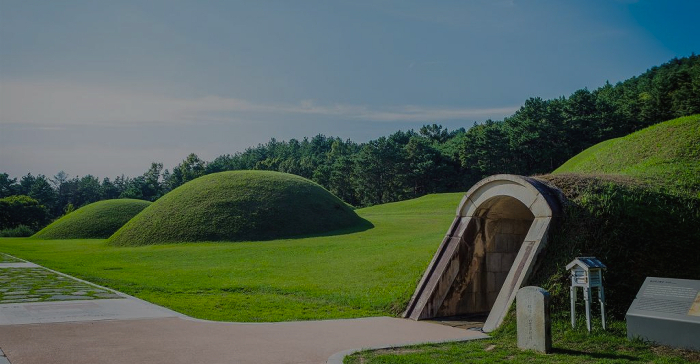
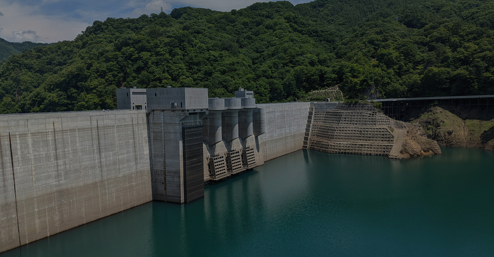
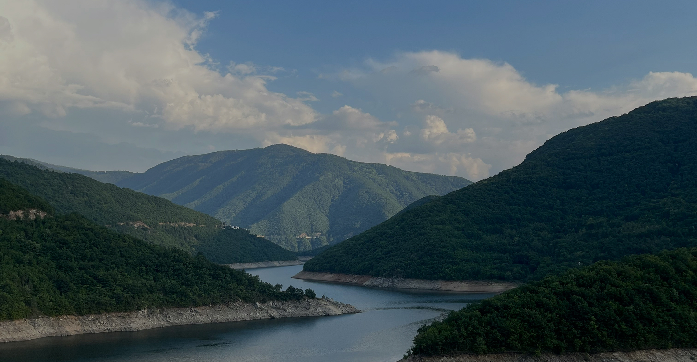
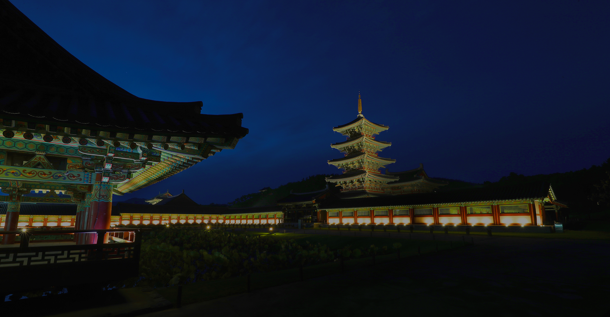
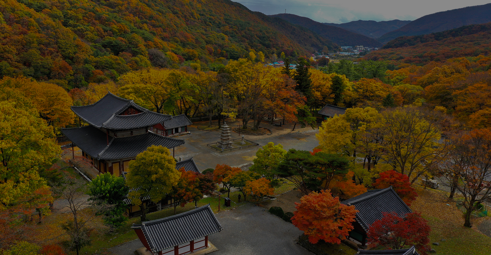
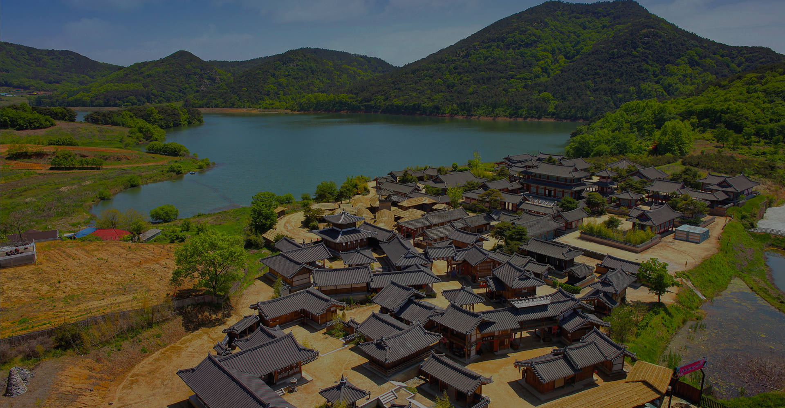
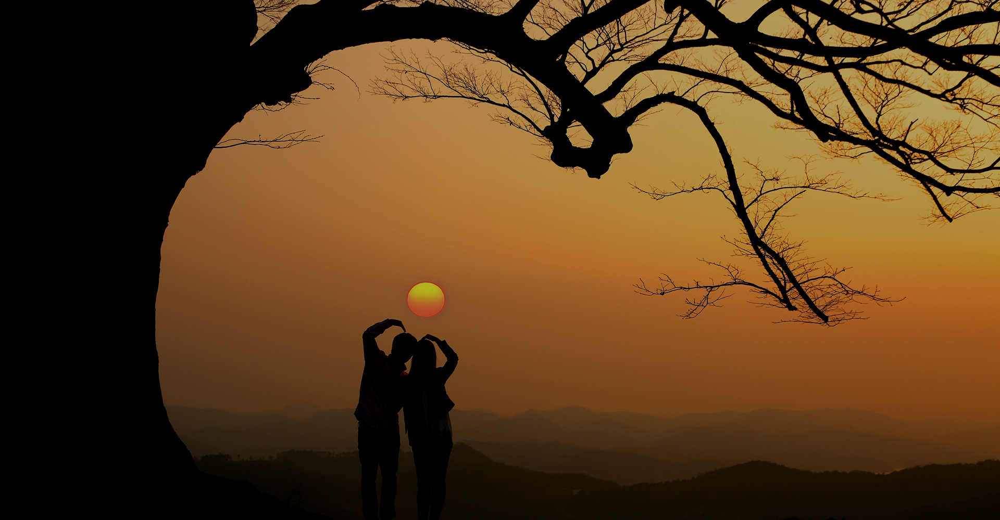

팝업
-
천년의 역사가 들려주는 이야기 속으로
제 1 경 부소산 낙화암
부소산은 부여읍 쌍북리, 구아리, 구교리에 걸쳐 있는 부여의 진산이다. 부소산은 평상시에는 백제왕실에 딸린 후원 구실을 하였으며, 전쟁때에는 사비도성의 최후를 지키는 장소가 되었던 곳이다.
자세히보기 -
천년의 역사가 들려주는 이야기 속으로
제 2 경 정림사지5층석탑
정림사지5층석탑은 백제가 부여로 도읍을 옮긴 6세기 초반에 세워진 석탑이다. 정림사는 백제 성왕이 538년 사비성(부여)으로 도읍을 옮길 때 건축한 백제의 대표적인 사찰로 왕궁 정남쪽에 위치하고 있다.
자세히보기 -
천년의 역사가 들려주는 이야기 속으로
제 3 경 궁남지사계
궁남지는 신라 선화공주와 결혼한 무왕의 서동요 전설이 깃든 곳이다. 7월에는 천만송이 연꽃들의 아름다운 향연인 서동연꽃축제가 열리고, 10~11월에는 국화전시회가 열려 궁남지의 아름다움을 더해준다.
자세히보기 -

천년의 역사가 들려주는 이야기 속으로
제 4 경 부여왕릉원
사비시대(538~660)의 백제왕릉묘역이다. 동쪽 나성(羅城)의 바로 바깥에 위치하고 있다. 이 가운데 중앙구역에 위치한 무덤들이 그 크기나 위치로 보아 사비시대 역대 왕들의 왕릉이었을 것으로 추정된다.
자세히보기 -

천년의 역사가 들려주는 이야기 속으로
제 5 경 천정대 백제보
『삼국유사』의 기록에 의하면 재상(宰相)을 선출할 때 그 후보자의 이름을 적어 봉함한 뒤 이곳에 놓아 두었다가 이름 위에 도장이 찍힌 사람을 재상으로 임명하였다고 한다.
자세히보기 -

천년의 역사가 들려주는 이야기 속으로
제 6 경 백마강 수상관광
부여를 감싸돌며 곳곳을 적시는 어머니와 같은 강으로 비단결 강물이 흐른다 하여 지어진 금강(錦江)은 전라북도 장수에서 시작해 충청북도와 충청남도를 흘러 서해로 들어간다.
자세히보기 -

천년의 역사가 들려주는 이야기 속으로
제 7 경 백제문화단지
백제 왕궁인 사비궁과 대표적 사찰인 능사, 묘제는 물론 백제의 역사와 문화를 한눈에 볼 수 있는 백제역사문화관 등 1,500년 전 문화대국이었던 백제의 모습을 보여주고 있다.
자세히보기 -

천년의 역사가 들려주는 이야기 속으로
제 8 경 만수산 무량사
무량사는 수양대군이 조카 단종을 살해한 뒤 임금이 된 것을 비판하며 평생을 은둔한 천재시인 매월당 김시습이 말년을 머물다가 세상을 떠난 곳이기도 하다.
자세히보기 -

천년의 역사가 들려주는 이야기 속으로
제 9 경 서동요테마파크
백제무왕(서동)과 선화공주와의 국경을 초월한 사랑을 극화한 한국 최초의 백제역사 SBS 드라마 서동요 오픈세트장으로 2005년에 약 1만여 평의 대지 위에 조성되었다.
자세히보기 -

천년의 역사가 들려주는 이야기 속으로
제 10 경 성흥산 사랑나무
성흥산성에 위치(해발 약240m)한 이 느티나무는 사랑나무라 불린다. 사랑나무는 멀리서도 눈에 잘 띠어 성흥산의 상징이 되는 나무이다. 키22m, 가슴직경 125cm, 수령 400여년 된 것으로 추정된다.
자세히보기